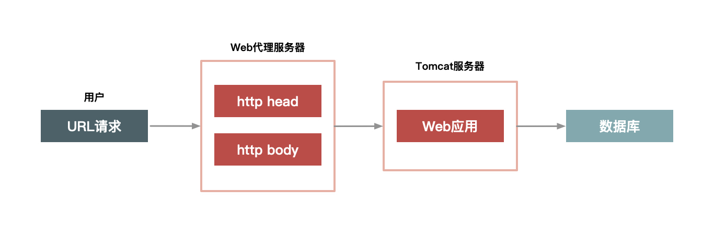
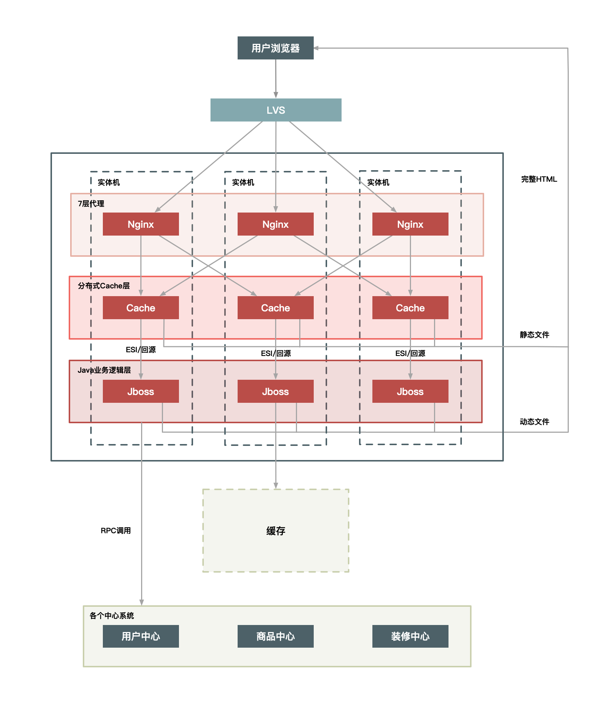
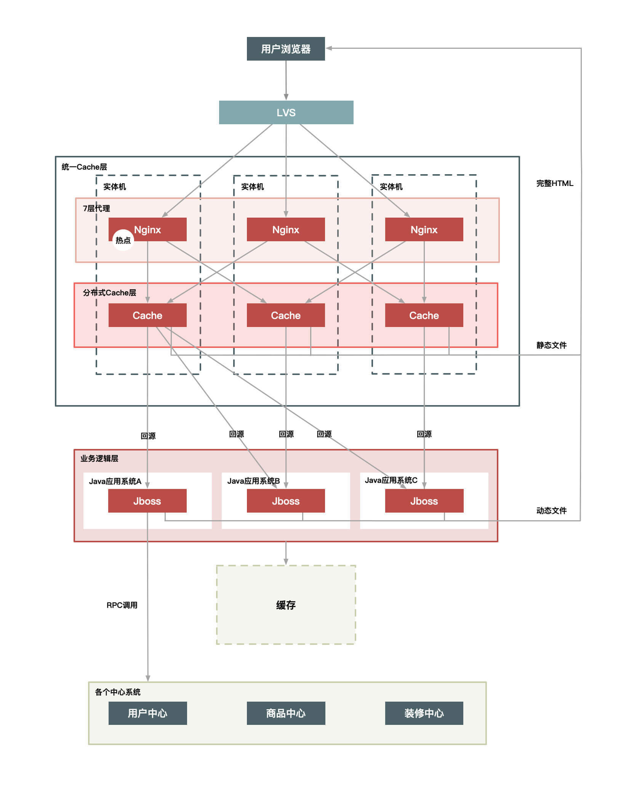
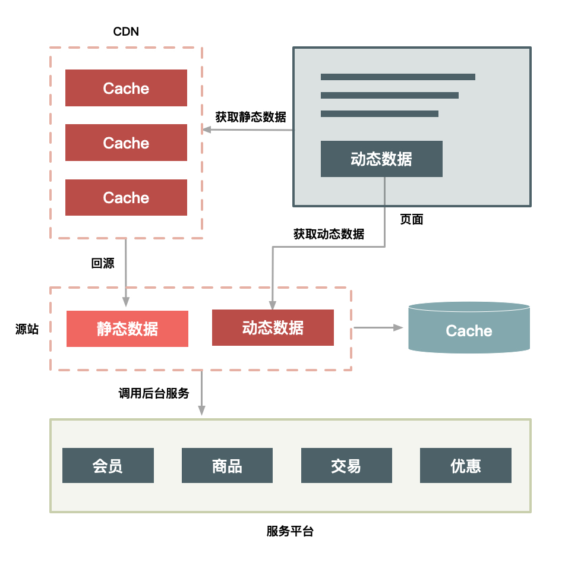

02 如何才能做好动静分离？有哪些方案可选？
上一篇文章中，我介绍了秒杀系统在架构上要考虑的几个原则，我估计你很快就会问：“知易行难，这些原则应该怎么应用到系统中呢？”别急，从这篇文章开始，我就会逐一介绍秒杀系统的各个关键环节中涉及的关键技术。
今天我们就先来讨论第一个关键点：数据的动静分离。不知道你之前听过这个解决方案吗？不管你有没有听过，我都建议你先停下来思考动静分离的价值。如果你的系统还没有开始应用动静分离的方案，那你也可以想想为什么没有，是之前没有想到，还是说业务体量根本用不着？
不过我可以确信地说，如果你在一个业务飞速发展的公司里，并且你在深度参与公司内类秒杀类系统的架构或者开发工作，那么你迟早会想到动静分离的方案。为什么？很简单，秒杀的场景中，对于系统的要求其实就三个字：快、准、稳。
那怎么才能“快”起来呢？我觉得抽象起来讲，就只有两点，一点是提高单次请求的效率，一点是减少没必要的请求。今天我们聊到的“动静分离”其实就是瞄着这个大方向去的。
不知道你是否还记得，最早的秒杀系统其实是要刷新整体页面的，但后来秒杀的时候，你只要点击“刷新抢宝”按钮就够了，这种变化的本质就是动静分离，分离之后，客户端大幅度减少了请求的数据量。这不自然就“快”了吗？
何为动静数据
那到底什么才是动静分离呢？所谓“动静分离”，其实就是把用户请求的数据（如HTML页面）划分为“动态数据”和“静态数据”。
简单来说，“动态数据”和“静态数据”的主要区别就是看页面中输出的数据是否和URL、浏览者、时间、地域相关，以及是否含有Cookie等私密数据。比如说：
- 很多媒体类的网站，某一篇文章的内容不管是你访问还是我访问，它都是一样的。所以它就是一个典型的静态数据，但是它是个动态页面。
- 我们如果现在访问淘宝的首页，每个人看到的页面可能都是不一样的，淘宝首页中包含了很多根据访问者特征推荐的信息，而这些个性化的数据就可以理解为动态数据了。
这里再强调一下，我们所说的静态数据，不能仅仅理解为传统意义上完全存在磁盘上的HTML页面，它也可能是经过Java系统产生的页面，但是它输出的页面本身不包含上面所说的那些因素。也就是所谓“动态”还是“静态”，并不是说数据本身是否动静，而是数据中是否含有和访问者相关的个性化数据。
还有一点要注意，就是页面中“不包含”，指的是“页面的HTML源码中不含有”，这一点务必要清楚。
理解了静态数据和动态数据，我估计你很容易就能想明白“动静分离”这个方案的来龙去脉了。分离了动静数据，我们就可以对分离出来的静态数据做缓存，有了缓存之后，静态数据的“访问效率”自然就提高了。
那么，怎样对静态数据做缓存呢？我在这里总结了几个重点。
第一，你应该把静态数据缓存到离用户最近的地方。静态数据就是那些相对不会变化的数据，因此我们可以把它们缓存起来。缓存到哪里呢？常见的就三种，用户浏览器里、CDN上或者在服务端的Cache中。你应该根据情况，把它们尽量缓存到离用户最近的地方。
第二，静态化改造就是要直接缓存HTTP连接。相较于普通的数据缓存而言，你肯定还听过系统的静态化改造。静态化改造是直接缓存HTTP连接而不是仅仅缓存数据，如下图所示，Web代理服务器根据请求URL，直接取出对应的HTTP响应头和响应体然后直接返回，这个响应过程简单得连HTTP协议都不用重新组装，甚至连HTTP请求头也不需要解析。

图1 静态化改造
第三，让谁来缓存静态数据也很重要。不同语言写的Cache软件处理缓存数据的效率也各不相同。以Java为例，因为Java系统本身也有其弱点（比如不擅长处理大量连接请求，每个连接消耗的内存较多，Servlet容器解析HTTP协议较慢），所以你可以不在Java层做缓存，而是直接在Web服务器层上做，这样你就可以屏蔽Java语言层面的一些弱点；而相比起来，Web服务器（如Nginx、Apache、Varnish）也更擅长处理大并发的静态文件请求。
如何做动静分离的改造
理解了动静态数据的“why”和“what”，接下来我们就要看“how”了。我们如何把动态页面改造成适合缓存的静态页面呢？其实也很简单，就是去除前面所说的那几个影响因素，把它们单独分离出来，做动静分离。
下面，我以典型的商品详情系统为例来详细介绍。这里，你可以先打开京东或者淘宝的商品详情页，看看这个页面里都有哪些动静数据。我们从以下5个方面来分离出动态内容。
- URL唯一化。商品详情系统天然地就可以做到URL唯一化，比如每个商品都由ID来标识，那么http://item.xxx.com/item.htm?id=xxxx就可以作为唯一的URL标识。为啥要URL唯一呢？前面说了我们是要缓存整个HTTP连接，那么以什么作为Key呢？就以URL作为缓存的Key，例如以id=xxx这个格式进行区分。
- 分离浏览者相关的因素。浏览者相关的因素包括是否已登录，以及登录身份等，这些相关因素我们可以单独拆分出来，通过动态请求来获取。
- 分离时间因素。服务端输出的时间也通过动态请求获取。
- 异步化地域因素。详情页面上与地域相关的因素做成异步方式获取，当然你也可以通过动态请求方式获取，只是这里通过异步获取更合适。
- 去掉Cookie。服务端输出的页面包含的Cookie可以通过代码软件来删除，如Web服务器Varnish可以通过unset req.http.cookie 命令去掉Cookie。注意，这里说的去掉Cookie并不是用户端收到的页面就不含Cookie了，而是说，在缓存的静态数据中不含有Cookie。
分离出动态内容之后，如何组织这些内容页就变得非常关键了。这里我要提醒你一点，因为这其中很多动态内容都会被页面中的其他模块用到，如判断该用户是否已登录、用户ID是否匹配等，所以这个时候我们应该将这些信息JSON化（用JSON格式组织这些数据），以方便前端获取。
前面我们介绍里用缓存的方式来处理静态数据。而动态内容的处理通常有两种方案：ESI（Edge Side Includes）方案和CSI（Client Side Include）方案。
- ESI方案（或者SSI）：即在Web代理服务器上做动态内容请求，并将请求插入到静态页面中，当用户拿到页面时已经是一个完整的页面了。这种方式对服务端性能有些影响，但是用户体验较好。
- CSI方案。即单独发起一个异步JavaScript 请求，以向服务端获取动态内容。这种方式服务端性能更佳，但是用户端页面可能会延时，体验稍差。
动静分离的几种架构方案
前面我们通过改造把静态数据和动态数据做了分离，那么如何在系统架构上进一步对这些动态和静态数据重新组合，再完整地输出给用户呢？
这就涉及对用户请求路径进行合理的架构了。根据架构上的复杂度，有3种方案可选：
- 实体机单机部署；
- 统一Cache层；
- 上CDN。
方案1：实体机单机部署
这种方案是将虚拟机改为实体机，以增大Cache的容量，并且采用了一致性Hash分组的方式来提升命中率。这里将Cache分成若干组，是希望能达到命中率和访问热点的平衡。Hash分组越少，缓存的命中率肯定就会越高，但短板是也会使单个商品集中在一个分组中，容易导致Cache被击穿，所以我们应该适当增加多个相同的分组，来平衡访问热点和命中率的问题。
这里我给出了实体机单机部署方案的结构图，如下：

图2 Nginx+Cache+Java结构实体机单机部署
实体机单机部署有以下几个优点：
- 没有网络瓶颈，而且能使用大内存；
- 既能提升命中率，又能减少Gzip压缩；
- 减少Cache失效压力，因为采用定时失效方式，例如只缓存3秒钟，过期即自动失效。
这个方案中，虽然把通常只需要虚拟机或者容器运行的Java应用换成实体机，优势很明显，它会增加单机的内存容量，但是一定程度上也造成了CPU的浪费，因为单个的Java进程很难用完整个实体机的CPU。
另外就是，一个实体机上部署了Java应用又作为Cache来使用，这造成了运维上的高复杂度，所以这是一个折中的方案。如果你的公司里，没有更多的系统有类似需求，那么这样做也比较合适，如果你们有多个业务系统都有静态化改造的需求，那还是建议把Cache层单独抽出来公用比较合理，如下面的方案2所示。
方案2：统一Cache层
所谓统一Cache层，就是将单机的Cache统一分离出来，形成一个单独的Cache集群。统一Cache层是个更理想的可推广方案，该方案的结构图如下：

图3 统一Cache
将Cache层单独拿出来统一管理可以减少运维成本，同时也方便接入其他静态化系统。此外，它还有一些优点。
- 单独一个Cache层，可以减少多个应用接入时使用Cache的成本。这样接入的应用只要维护自己的Java系统就好，不需要单独维护Cache，而只关心如何使用即可。
- 统一Cache的方案更易于维护，如后面加强监控、配置的自动化，只需要一套解决方案就行，统一起来维护升级也比较方便。
- 可以共享内存，最大化利用内存，不同系统之间的内存可以动态切换，从而能够有效应对各种攻击。
这种方案虽然维护上更方便了，但是也带来了其他一些问题，比如缓存更加集中，导致：
- Cache层内部交换网络成为瓶颈；
- 缓存服务器的网卡也会是瓶颈；
- 机器少风险较大，挂掉一台就会影响很大一部分缓存数据。
要解决上面这些问题，可以再对Cache做Hash分组，即一组Cache缓存的内容相同，这样能够避免热点数据过度集中导致新的瓶颈产生。
方案3：上CDN
在将整个系统做动静分离后，我们自然会想到更进一步的方案，就是将Cache进一步前移到CDN上，因为CDN离用户最近，效果会更好。
但是要想这么做，有以下几个问题需要解决。
- 失效问题。前面我们也有提到过缓存时效的问题，不知道你有没有理解，我再来解释一下。谈到静态数据时，我说过一个关键词叫“相对不变”，它的言外之意是“可能会变化”。比如一篇文章，现在不变，但如果你发现个错别字，是不是就会变化了？如果你的缓存时效很长，那用户端在很长一段时间内看到的都是错的。所以，这个方案中也是，我们需要保证CDN可以在秒级时间内，让分布在全国各地的Cache同时失效，这对CDN的失效系统要求很高。
- 命中率问题。Cache最重要的一个衡量指标就是“高命中率”，不然Cache的存在就失去了意义。同样，如果将数据全部放到全国的CDN上，必然导致Cache分散，而Cache分散又会导致访问请求命中同一个Cache的可能性降低，那么命中率就成为一个问题。
- 发布更新问题。如果一个业务系统每周都有日常业务需要发布，那么发布系统必须足够简洁高效，而且你还要考虑有问题时快速回滚和排查问题的简便性。
从前面的分析来看，将商品详情系统放到全国的所有CDN节点上是不太现实的，因为存在失效问题、命中率问题以及系统的发布更新问题。那么是否可以选择若干个节点来尝试实施呢？答案是“可以”，但是这样的节点需要满足几个条件：
- 靠近访问量比较集中的地区；
- 离主站相对较远；
- 节点到主站间的网络比较好，而且稳定；
- 节点容量比较大，不会占用其他CDN太多的资源。
最后，还有一点也很重要，那就是：节点不要太多。
基于上面几个因素，选择CDN的二级Cache比较合适，因为二级Cache数量偏少，容量也更大，让用户的请求先回源的CDN的二级Cache中，如果没命中再回源站获取数据，部署方式如下图所示：

图4 CDN化部署方案
使用CDN的二级Cache作为缓存，可以达到和当前服务端静态化Cache类似的命中率，因为节点数不多，Cache不是很分散，访问量也比较集中，这样也就解决了命中率问题，同时能够给用户最好的访问体验，是当前比较理想的一种CDN化方案。
除此之外，CDN化部署方案还有以下几个特点：
- 把整个页面缓存在用户浏览器中；
- 如果强制刷新整个页面，也会请求CDN；
- 实际有效请求，只是用户对“刷新抢宝”按钮的点击。
这样就把90%的静态数据缓存在了用户端或者CDN上，当真正秒杀时，用户只需要点击特殊的“刷新抢宝”按钮，而不需要刷新整个页面。这样一来，系统只是向服务端请求很少的有效数据，而不需要重复请求大量的静态数据。
秒杀的动态数据和普通详情页面的动态数据相比更少，性能也提升了3倍以上。所以“抢宝”这种设计思路，让我们不用刷新页面就能够很好地请求到服务端最新的动态数据。
总结一下
今天，我主要介绍了实现动静分离的几种思路，并由易到难给出了几种架构方案，以及它们各自的优缺点。可以看到，不同的架构方案会引入不同的问题，比如我们把缓存数据从CDN上移到用户的浏览器里，针对秒杀这个场景是没问题的，但针对一般的商品可否也这样做呢？
你可能会问，存储在浏览器或CDN上，有多大区别？我的回答是：区别很大！因为在CDN上，我们可以做主动失效，而在用户的浏览器里就更不可控，如果用户不主动刷新的话，你很难主动地把消息推送给用户的浏览器。
另外，在什么地方把静态数据和动态数据合并并渲染出一个完整的页面也很关键，假如在用户的浏览器里合并，那么服务端可以减少渲染整个页面的CPU消耗。如果在服务端合并的话，就要考虑缓存的数据是否进行Gzip压缩了：如果缓存Gzip压缩后的静态数据可以减少缓存的数据量，但是进行页面合并渲染时就要先解压，然后再压缩完整的页面数据输出给用户；如果缓存未压缩的静态数据，这样不用解压静态数据，但是会增加缓存容量。虽然这些都是细节问题，但你在设计架构方案时都需要考虑清楚。
最后，欢迎在留言区分享讨论你对于数据动静分离的一些关键认知，我会第一时间给你反馈。
© 2019 - 2023 Liangliang Lee. Powered by gin and hexo-theme-book.